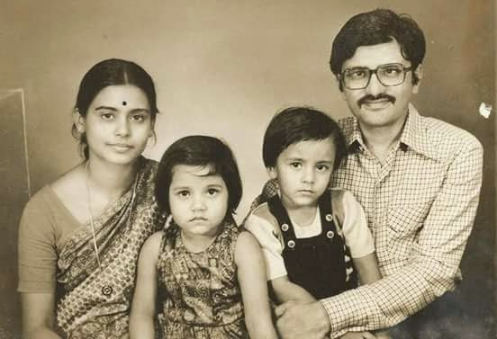
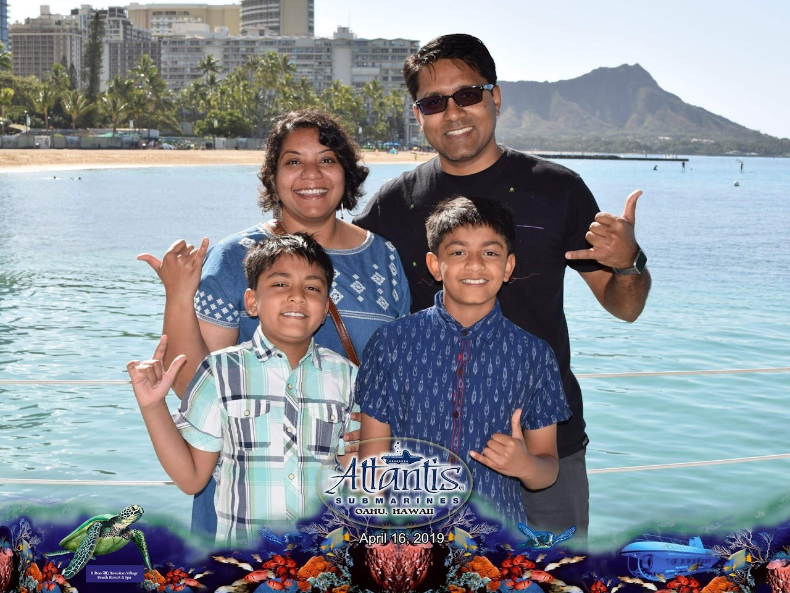
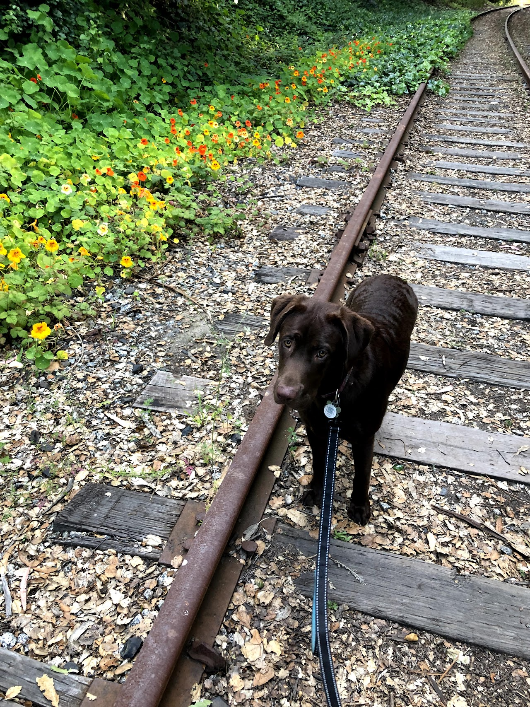
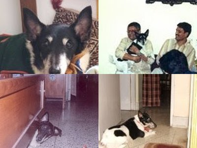

Family
I come from a Bangla-speaking family from the eastern Indian city of Kolkata (Calcutta). I am married to Moumita Sinha and we have two sons, Nishaant and Aneesh. We also have a dog named Nash. We currently live in Cupertino, California.

Earlier days

The family today

Nash
Parents
My father, Shri Santanu Sinha Chaudhuri, worked in banking for about twenty-five years. His responsibilities moved our family from city to city — Hyderabad, Visakhapatnam, Trivandrum, Bangalore, and Calcutta — which, in retrospect, was a wonderful experience that exposed me to many places and people. He is now engaged in writing in English and translating Bengali works of fiction into English.
My mother, Smt. Arundhati Sinha, is a teacher who has taught at more than ten schools. She currently runs an adorable pre-school, Ankur Khelaghar, in Parnasree, Calcutta.
Siblings
My sister Sohini Sinha lives and works in Bangalore, India.
Chorki (1995–2010)
Chorki — or Chakradhar — was a Smooth Fox Terrier who came to our house in Kolkata as a six-week-old pup on 18 March 1995, just a few weeks after being born on 5 February. After many years of trials and tribulations, he managed to become the most important individual in the family.
He would fetch anything you threw, chase anything that moved — lizards, crows, even flowing water — and was impossible not to love. Chorki passed away in 2010 and is dearly missed.

Chorki through the years